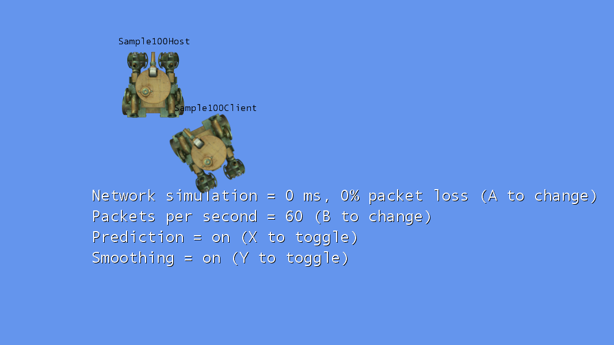

Network Prediction
Ported from Microsoft's XNA 4.0 Network Prediction Sample for Windows and Xbox 360.
Source for this sample on GitHub ↗
Native OPENGLES3 only. Browser version unavailable. This entry documents the current native port and the missing browser features; it has no playable web build.

Screenshot of the current native game with two real connected peers.
About this sample
Drive and aim tanks in a System Link session. The sample demonstrates how prediction and smoothing improve remote movement when packets arrive late, infrequently or not at all. It is a motion demonstration, without shooting or combat.
The native port uses real session discovery, joining and tank packets. The host's network quality, packet rate, prediction and smoothing settings automatically replicate to the client through the original session properties.
What is missing for the browser
- Account sign-in: current CNA needs its configured account service. Its browser HTTPS sign-in transport and account lifecycle are not qualified; the native service transport uses libcurl and a worker thread.
- Session discovery: the browser implementation returns no sessions. A browser-capable directory must support the original create, find and join flow.
- Host connectivity: a browser cannot expose the native inbound System Link endpoint. A general relay and connection handoff are missing; joining also needs a discoverable address.
- Real peer gameplay: two browser peers have not exchanged tank state or automatically replicated host settings. Prediction, smoothing, simulated loss and all packet rates remain unqualified with real browser peers.
- A current deployable build: the retained experimental WASM needs cross-origin isolation to start. With those headers it renders a local host, but another page reports “No network sessions found.” That older build does not establish that today's account backend works in a browser, and is not published here.
These are shared CNA service and transport gaps. There is no fake lobby, sample-local network substitute or web menu presented as a completed game.
Native setup
The current native build requires a running CNA account service, a provisioned title and real accounts. Configure CNA_GAMER_SERVICES_ENDPOINT, CNA_GAME_ID and, for a private certificate authority, CNA_GAMER_SERVICES_CA_BUNDLE externally. Sign in through the ordinary Guide prompt on each instance, then create and join the System Link session.
Offline or guest sign-in is unfinished in current CNA. The sample does not bypass sign-in or invent profiles. CNA's accounts are separate from Xbox LIVE; native System Link tank traffic uses the existing native transport.
Native controls
| Action | Control |
|---|---|
| Create / find and join a session | A / B in the menu |
| Drive / aim the turret | Arrow keys / K, O, L, semicolon |
| Change network quality / packet rate | A / B on the host |
| Toggle prediction / smoothing | X / Y on the host |
| Stop the sample | Escape or gamepad Back |
The original gamepad thumbstick and A/B/X/Y controls are retained.